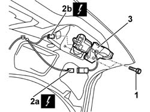

7015B10 SINGLE TAILGATE LOCK - R+R OR REPAIR WITH PANEL/PROTECTION REMOVED
- Path
- Procedures > 70 FITTINGS > 7015 TAILGATE/FLAP > 7015B TAILGATE LOCKING/OPENING DEVICES > 7015B10 SINGLE TAILGATE LOCK - R+R OR REPAIR WITH PANEL/PROTECTION REMOVED
- Kind
- repair procedure (removal / refitting; the operation number is the code)
- Applies to
- all engines; all production periods
- Interactive page
- https://sloeber94.github.io/elrnDB-aGt/en/#/125001818
Applies to: all engines; all production periods
 Removing
Removing
 Refitting
Refitting1. Undo the bolts.
2. Gently withdraw the lock with motor and disconnect the electrical connections (2a, 2b).
Name | Connector | |
|---|---|---|
2a | Boot opening switch | See I11 BOOT OPENING SWITCH |
Name | Connector | |
|---|---|---|
2b | Boot opening geared motor | See N57 BOOT OPENING GEARED MOTOR ( CONNECTORS ) |
3. Keep the lock and motor complete with tailgate opening safety cable.

Applies to: all engines; all production periods
Refitting
RemovingCheck that the lock with motor is not damaged.
Connect the electrical connections .
Position the lock and motor complete with tailgate opening safety cable.
Tighten the bolts.
 | Fastening | Component | Ø | Value (daNm) |
|---|---|---|---|---|
- | Bolt | TAIL-GATE LOCK | M6 | 08 |
If necessary, adjust the lock striker:
Op. 7015A10 TAILGATE - ADJUST STRIKER AND ADAPT SEAL IF NECESSARY.
Topics linked from this page (1)
Topics that link to this page (10)
- A30 ALARM NOT WORKING LUGGAGE COMPARTMENT UNLOCKED
- A31 ALARM DOES NOT COME ON WHEN LUGGAGE COMPARTMENT IS CLOSED
- A32 ALARM DOES NOT GO OFF WITH BOOT RELEASE
- I51 INTERIOR FRONT LIGHT NOT WORKING
- 5505B55 TAIL-GATE WIRING - R R
- 5505C41 CABIN WIRING - R R
- 7015B70 TAIL-GATE LOCK MOTOR - R R AND CHECK LOCK SUPPLY LINE
- 7035B14 REAR WINDOW GLASS R R INCLUDES CLEANING OF HOUSING
- 7205E56 STRIPPING TAILGATE
- 7210E56 TAIL-GATE